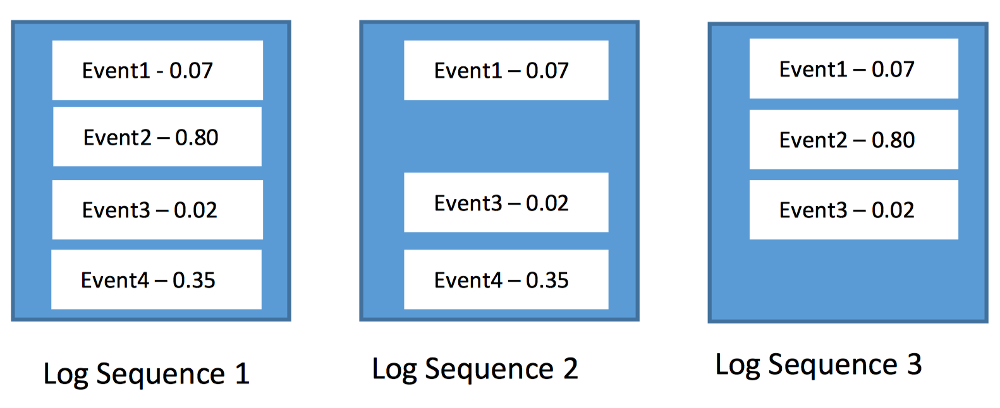
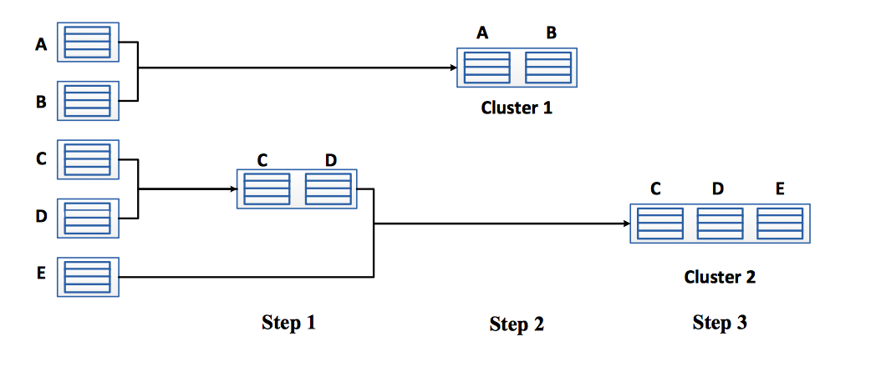
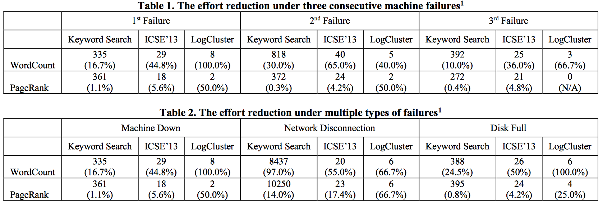
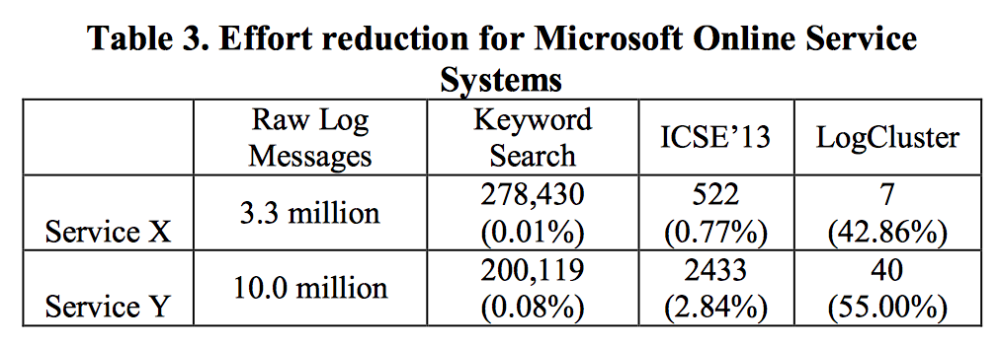
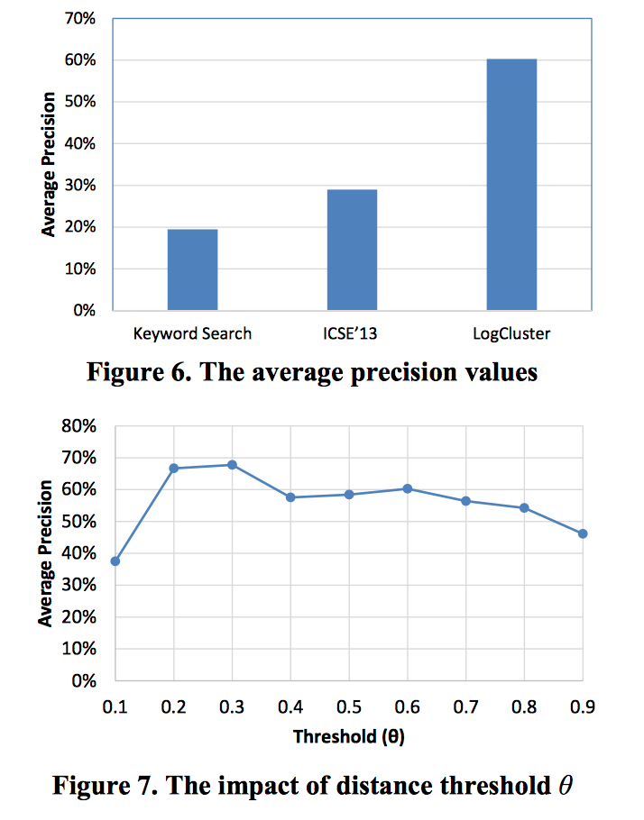

Log Clustering based Problem Identification for Online Service Systems (ICSE '16)
Authors: Qingwei Lin, Hongyu Zhang, Jian-Guang Lou, Yu Zhang, Xuewei Chen
Presenter: Xingan Wang
TOC
- Background and Motivation
- The Approach
- Experimental Design and Results
Background and Motivation
ICSE’13 approach has limitations
-
Precision is still rather low
It does not consider the potential similarity between two log sequences when they are not repetition or permutation of each other.
But log sequences are highly diverse and log events are not equal in importance.
> “E1, E2, E3, E3, E5, E6” and “E1, E3, E5, E2, E6” are reduced to be the same
-
Not utilize the previous known failures
Many of the failures are recurrent ones, whose mitigations/resolutions are already known to the engineers and whose corresponding logs need not to be examined again.
But ICSE’13 approach requires the engineers to examine all delta sequences.
Log Cluster
- Utilizes the characteristics of logs of online service systems to facilitate log- based problem identification.
- Addresses the limitations of the previous approaches and outperforms them.
Major steps
- Log Vectorization: Turn each log sequence into a vector.
- Log Clustering: Calculate the similarity value between two log sequences and group the similar log sequences into clusters.
- Extracting Representative Log Sequence: Select a representative log sequence from each cluster by choosing the centroid of the cluster.
- Checks if a representative log sequence appears before by querying a knowledge base.
- The knowledge base is also updated with the new clusters.
Log Vectorization
- Parse free-form raw log messages using log abstraction
- Produces log sequences by deduplicating and linking same ID
- Weighting with Inverse Document Frequency and Contrast: \[w(t) = 0.5 × Norm(w_{idf}(t)) + 0.5 × w_{con}(t)\]
After calculating the weight for each event, we can represent a log sequence as a vector of weight in an N-dimensional space.

Log Clustering
(Agglomerative Hierarchical clustering)

\[Similarity(S_i, S_j) = \frac{S_i \cdot \S_j}{\|S_i\|\|S_j\|}\]
Extracting Representative Log Sequence
Compute the score of each log sequence i in a cluster based on its average distance to other log sequences in the same cluster:
\[Score(i) = \frac{1}{n-1}\sum^{n}_{j=1}(1 − Similarity(S_i, S_j))\]
Select the log sequence with the minimal score for manual examination.
Checking Recurrence
- Select representative log sequence of the new cluster.
- Use same cosine similarity measure with existing knowledge base.
- If recurrent and corresponds to a known failure, the associated mitigation actions are retrieved from the knowledge base.
- New representative is returned for manual examination and update the knowledge base.
Experiments
- Same application: WordCount, PageRank
- Two addition Microsoft Services added(X and Y).
- Collect: Hadoop logs, MS services logs (3.3m from X, 10m from Y)
- Hardware: A cluster with 46 cores across five machines. Each PC has Intel(R) Core(TM) i7- 3770 CPU and 16GB RAM.
Results
- RQ1: How much effort reduction does LogCluster achieve?
- RQ2: How accurate is LogCluster in identifying problems?
- RQ3: The impact of the distance threshold


Measured in terms of #log sequences to be examined. Numbers in brackets indicate the precision values (i.e., the percentage of examined log sequences that are associated with the actual failures).

> LogCluster achieves the best overall accuracy. And is insensitive to the distance threshold.